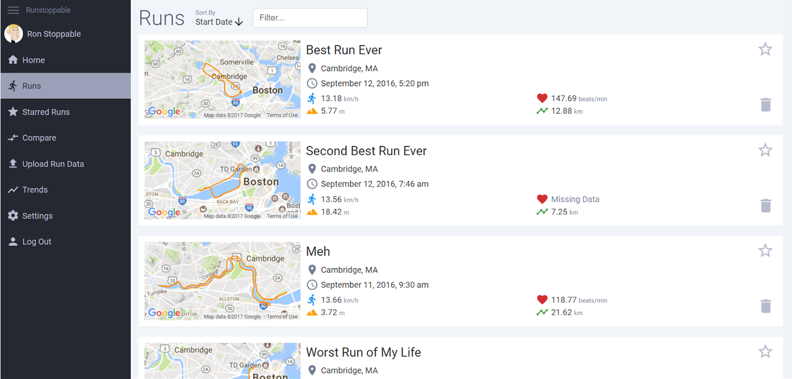

Runstoppable
I worked on this project in 6.813 User Interface Design & Implementation with three other people. We created a platform for serious runners to keep track of their runs, compare runs, look at their running trends, and get meaningful insight of all of their running data.
See the project at runstoppable.io.
